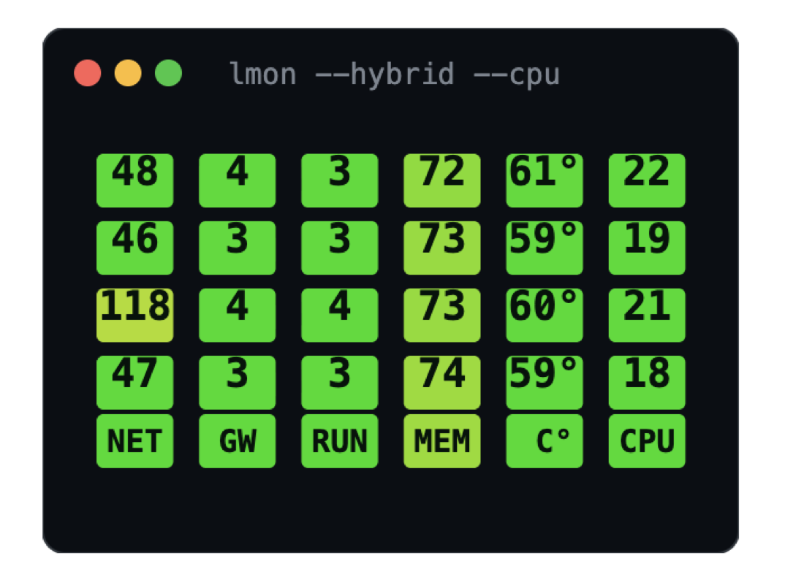
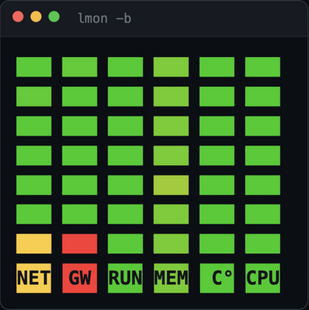
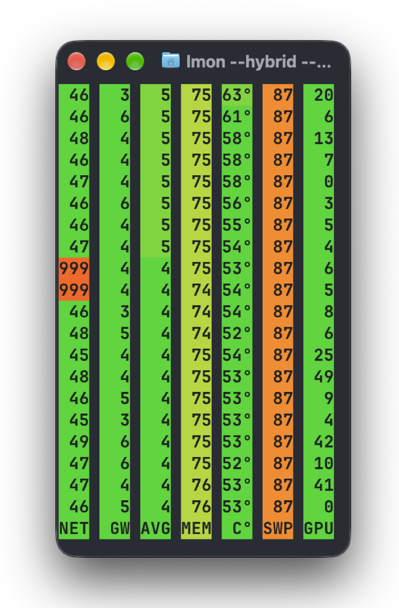
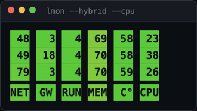

lmon
One line per second tells you whether your machine is okay. Color instead of digits: green means calm, red means look.
По-русски · English
How it looks
Three display modes — plus a compact corner widget.
Values are real, captured by lmon on macOS.




What it shows
A dot · means the machine has no such sensor (honest, no made-up numbers),
999 — the host is not answering. Any column set and order: lmon --cols NRMC.
There is also the colored-squares mode -b and digits on a colored background --hybrid (as in the demo above).
Install
Intel Mac: use lmon_darwin_amd64.tar.gz. The sudo password is invisible while typing — that is normal.
Fedora/RHEL: pick the .rpm from the releases page; other distros — the tar.gz like on macOS.
SmartScreen will warn about an unknown program: "More info" → "Run anyway".
Check it: lmon 5 prints five lines and exits. Built-in reference: lmon help (English by default, lmon help ru for Russian).